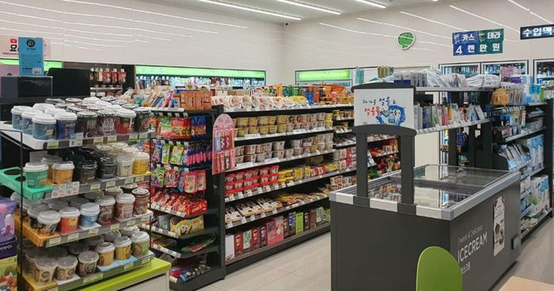
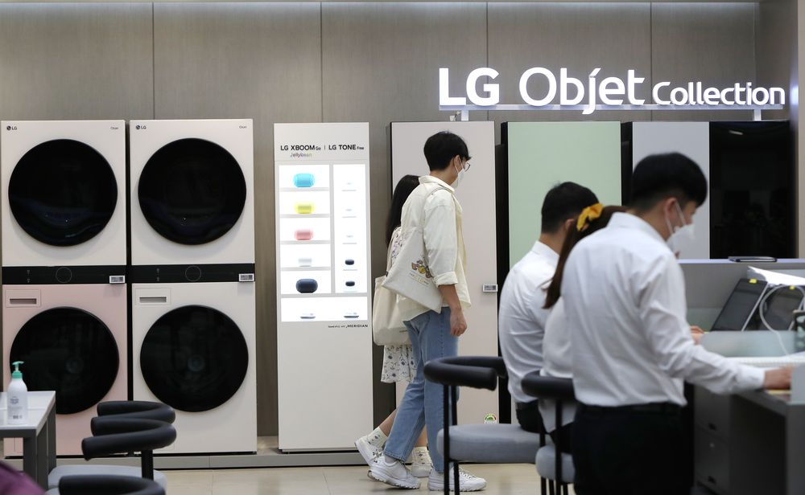
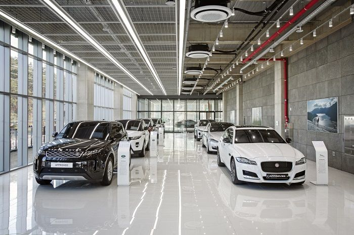
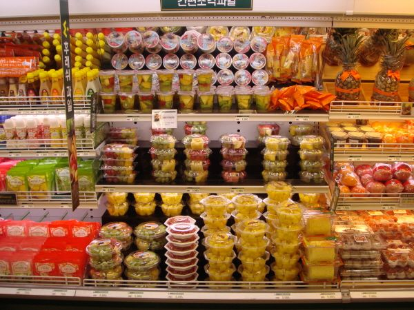
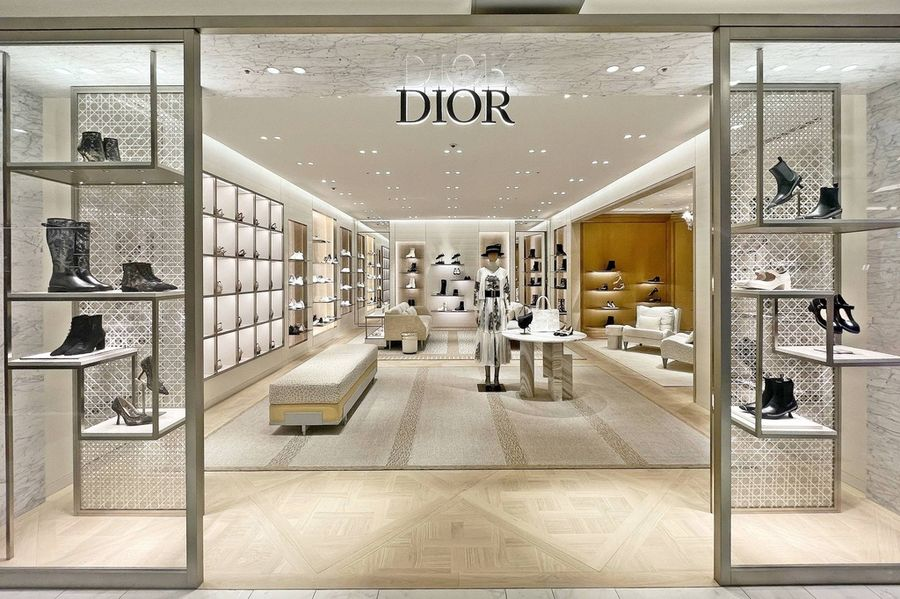

실무 1
매장 특성 분석하기
상품이 얼마나 오래 남는지, 판매원이 얼마나 많이 알아야 하는지
학습 목표
- 상품 보관 기간과 판매 지식 수준에 따라 매장 유형을 분석할 수 있다.
- 상품의 특성에 따라 재고 관리와 판매 전략이 달라짐을 이해할 수 있다.
두 개의 축 매장의 성격은 ‘무엇을 파는가’보다 얼마나 빨리 팔아야 하는가(상품 보관 기간)와 얼마나 설명해야 하는가(판매원의 판매 지식 수준)로 갈립니다.
| 유형 | 보관 기간 | 판매원 지식 | 수업에서 드는 예 | 판매원의 중심 업무 |
|---|---|---|---|---|
| 소비자 설득형 | 짧다 | 높다 | 베이커리·케이크, 신선식품, 화장품, 휴대폰 | 설명·추천·시연으로 구매를 설득한다. 오늘 안 팔면 버려야 하는 상품이 많다. |
| 소비자 선택형 | 길다 | 낮음~보통 | 편의점, 대형마트, 생활용품, 문구 | 찾기 쉽게 진열하고 계산·안내를 빠르게 처리한다. 손님이 혼자 고르는 시간이 길다. |
분류가 헷갈릴 때 던지는 두 질문
“오늘 안 팔면 버려야 하는 상품인가?” · “손님이 설명 없이 혼자 고를 수 있는 상품인가?” 두 답이 엇갈리면 그 매장은 두 유형이 섞여 있는 것입니다. 실제 매장은 대부분 섞여 있습니다.
PPT 원본 화면 · 실무 1수업 PPT의 매장 사진 6장






- 내가 최근에 간 매장 5곳을 두 축 위에 놓아 봅니다. 어느 쪽에도 놓기 어려운 매장이 가장 좋은 토론 재료입니다.
- 사진과 설명만 보고 모둠별로 소비자 설득형·선택형으로 나눕니다. 왜 그렇게 판단했는지가 답보다 중요합니다.
- 분류가 갈린 매장은 무엇 때문인지 말해 봅니다. 상품인지, 위치인지, 판매원의 역할인지.
수업 발문“자주 가는 매장을 하나 골라 보세요. 그 매장 상품의 보관 기간은 얼마나 되나요? 판매원은 어느 정도까지 알고 있어야 하나요?”